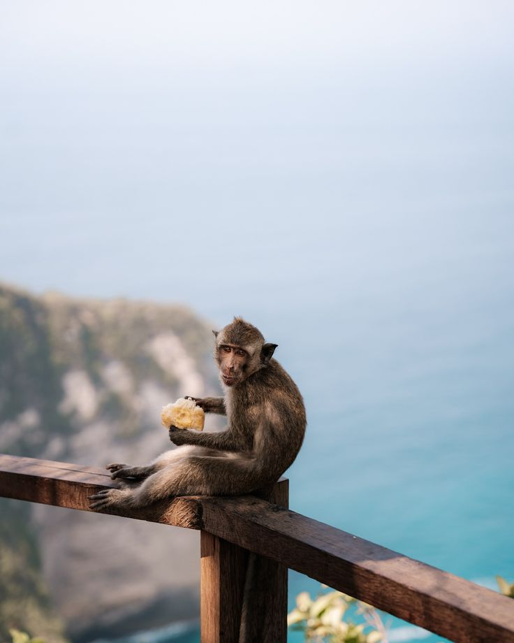
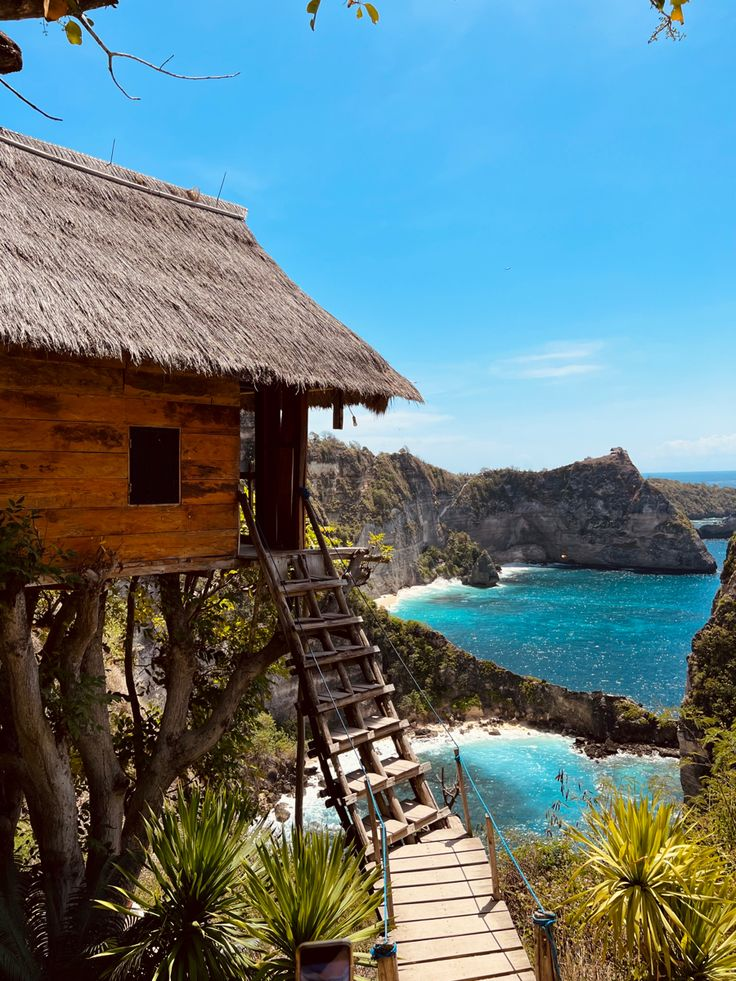

Nusa Penida menyuguhkan keindahan alam yang luar biasa melalui pantai-pantai
eksotis, tebing megah, dan laut biru jernih yang menjadi daya tarik utama
wisatawan lokal maupun mancanegara.
Kelingking Beach terletak di bagian barat Pulau Nusa Penida, Kabupaten Klungkung, Bali, dan berada di wilayah Desa Bunga Mekar, tidak jauh dari destinasi populer lainnya seperti Broken Beach (Pasih Uug) dan Angel’s Billabong, sehingga biasanya dikunjungi dalam satu rute perjalanan wisata di Nusa Penida bagian barat Wisata Broken Beach (Pasih Uug) merupakan salah satu destinasi unggulan di Nusa Penida yang terkenal dengan keindahan tebing karang berlubang alami berbentuk lengkungan besar, menciptakan pemandangan laut yang sangat unik dan ikonik, di mana air laut biru masuk ke teluk membentuk kolam raksasa alami, dipadukan dengan suasana alam yang masih asri dan spot fotografi yang menakjubkan, sehingga Broken Beach menjadi tempat ideal bagi wisatawan untuk menikmati panorama alam dari ketinggian, merasakan ketenangan, serta mengagumi keajaiban alam Nusa Penida yang memikat.Wisata Angel’s Billabong merupakan destinasi alam yang menakjubkan di Nusa Penida, terkenal dengan kolam alami di antara batuan karang yang berisi air laut sangat jernih dengan gradasi warna hijau kebiruan, menciptakan pemandangan yang eksotis dan menenangkan, di mana pengunjung dapat menikmati keindahan alam yang masih alami, merasakan sensasi berendam di kolam alami saat air laut surut, serta menyaksikan langsung keunikan formasi karang dan deburan ombak Samudra Hindia di sekitarnya, sehingga tempat ini menjadi salah satu spot favorit wisatawan untuk relaksasi, fotografi, dan menikmati pesona alam Nusa Penida yang autentik.Ikan pari khas Nusa Penida yang paling terkenal adalah ikan pari manta (Manta Ray), yang menjadi ikon wisata bahari di kawasan ini karena ukurannya yang besar, gerakannya yang anggun, dan sering muncul di perairan sekitar Manta Point dan Manta Bay, sehingga wisatawan dari berbagai negara datang untuk snorkeling dan diving guna melihat langsung pari manta berenang bebas di habitat alaminya, sekaligus menjadikan Nusa Penida sebagai salah satu lokasi terbaik di dunia untuk konservasi dan pengamatan pari manta secara alami.

Di Nusa Penida, monyet (monkey) dapat ditemui terutama di kawasan Pura Dalem Ped dan beberapa area hutan serta tebing di sekitarnya, di mana monyet-monyet ini hidup liar dan menjadi bagian dari ekosistem alam pulau, sehingga wisatawan dapat melihat langsung perilaku alami mereka sambil menikmati suasana alam dan budaya setempat, namun tetap disarankan untuk berhati-hati, tidak memberi makan, dan menjaga barang bawaan karena monyet dikenal cukup aktif dan penasaran terhadap pengunjung.Diamond Beach di Nusa Penida merupakan salah satu pantai terindah yang wajib dikunjungi karena memiliki pasir putih bersih, air laut biru jernih, serta tebing-tebing tinggi dengan formasi batuan runcing menyerupai berlian yang menjadi ciri khasnya, dipadukan dengan pemandangan dramatis dari atas tebing dan akses tangga yang menantang namun memuaskan, sehingga pengunjung dapat menikmati panorama alam yang sangat eksotis, berfoto di spot ikonik, serta merasakan keindahan alam Nusa Penida yang masih alami dan memukau.

**Tree House (Rumah Pohon Molenteng)** di Nusa Penida merupakan destinasi wisata yang populer karena menawarkan pengalaman unik menikmati keindahan alam dari ketinggian, dengan pemandangan langsung ke arah laut biru, tebing-tebing dramatis, dan panorama **Atuh Beach** yang menakjubkan, sehingga pengunjung dapat merasakan sensasi menginap atau berfoto di rumah pohon sederhana yang menyatu dengan alam, menciptakan suasana tenang, romantis, dan sangat Instagramable, sekaligus menjadi tempat ideal untuk menikmati matahari terbit dan pesona alam Nusa Penida yang masih alami.